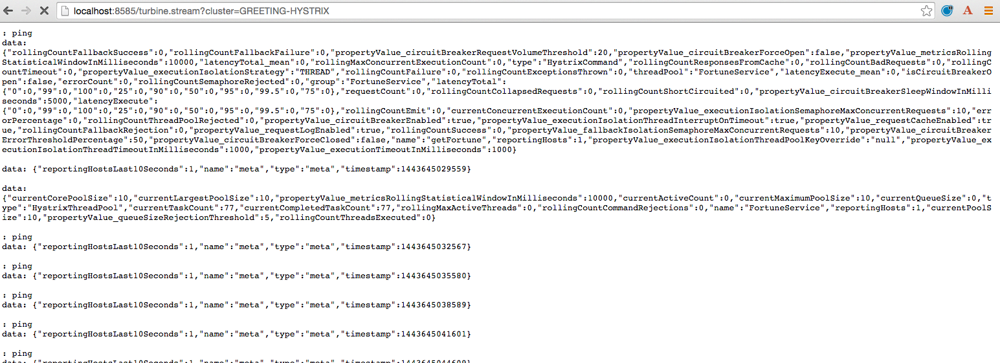
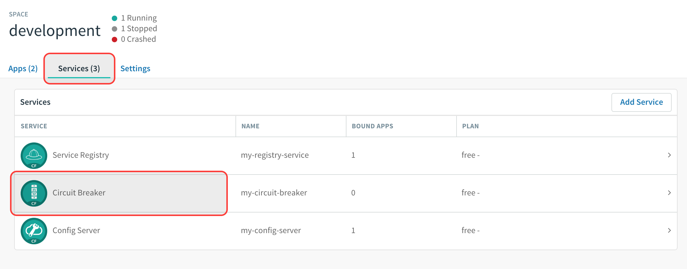
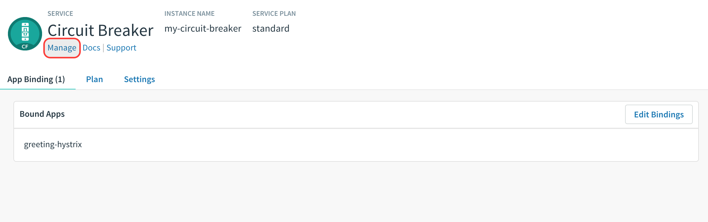

Estimated Time: 25 minutes
Requirements
What You Will Learn
- How to aggregate multiple metric streams with
turbine - How to use Turbine in Pivotal Cloud Foundry
Exercises
Start the config-server, service-registry, fortune-service, greeting-hystrix, and hystrix-dashboard applications
1) Start the config-server in a terminal window. You may have terminal windows still open from previous labs. They may be reused for this lab.
$ cd $SPRING_CLOUD_SERVICES_LABS_HOME/config-server
$ mvn clean spring-boot:run
2) Start the service-registry
$ cd $SPRING_CLOUD_SERVICES_LABS_HOME/service-registry
$ mvn clean spring-boot:run
3) Start the fortune-service
$ cd $SPRING_CLOUD_SERVICES_LABS_HOME/fortune-service
$ mvn clean spring-boot:run
4) Start the greeting-hystrix
$ cd $SPRING_CLOUD_SERVICES_LABS_HOME/greeting-hystrix
$ mvn clean spring-boot:run
5) Start the hystrix-dashboard
$ cd $SPRING_CLOUD_SERVICES_LABS_HOME/hystrix-dashboard
$ mvn clean spring-boot:run
Allow a few moments for greeting-hystrix and fortune-service to register with the service-registry.
Set up turbine
Looking at individual application instances in the Hystrix Dashboard is not very useful in terms of understanding the overall health of the system. Turbine is an application that aggregates all of the relevant /hystrix.stream endpoints into a combined /turbine.stream for use in the Hystrix Dashboard.
1) Review the $SPRING_CLOUD_SERVICES_LABS_HOME/turbine/pom.xml file. By adding spring-cloud-starter-turbine to the classpath this application is eligible to aggregate metrics via Turbine.
<dependency>
<groupId>org.springframework.cloud</groupId>
<artifactId>spring-cloud-starter-turbine</artifactId>
</dependency>
2) Review the following file: $SPRING_CLOUD_SERVICES_LABS_HOME/turbine/src/main/java/io/pivotal/TurbineApplication.java. Note the use of the @EnableTurbine annotation. This creates a turbine application.
@SpringBootApplication
@EnableTurbine
public class TurbineApplication {
public static void main(String[] args) {
SpringApplication.run(TurbineApplication.class, args);
}
}
3). Review the following file: $SPRING_CLOUD_SERVICES_LABS_HOME/turbine/src/main/resources/bootstrap.yml. turbine.appConfig is a list of Eureka serviceIds that Turbine will use to lookup instances. turbine.aggregator.clusterConfig is the Turbine cluster these services belong to (how they will be grouped).
server:
port: 8585
spring:
application:
name: turbine
turbine:
aggregator:
clusterConfig: GREETING-HYSTRIX
appConfig: greeting-hystrix
4) Open a new terminal window. Start the turbine app
$ cd $SPRING_CLOUD_SERVICES_LABS_HOME/turbine
$ mvn clean spring-boot:run
5) Wait for the turbine application to register with service-registry.
6) View the turbine stream in a browser http://localhost:8585/turbine.stream?cluster=GREETING-HYSTRIX 
7) Configure the hystrix-dashboard to consume the turbine stream. Enter http://localhost:8585/turbine.stream?cluster=GREETING-HYSTRIX
8) Experiment! Refresh the greeting-hystrix / endpoint several times. Take down the fortune-service app. What does the dashboard do?
9) When done, stop the config-server, service-registry, fortune-service, greeting-hystrix, hystrix-dashboard and turbine applications.
What Just Happened?
Turbine discovered the greeting-hystrix application through the service-registry application. Turbine then consumed the /hystrix.stream and rolled that up into an aggregate /turbine.stream. Therefore, if we had multiple greeting-hystrix applications running all the metrics could be consumed from this single endpoint (/turbine.stream)
Deploying to PCF
In PCF, the traditional Turbine model of pulling metrics from all the distributed Hystrix enabled applications via HTTP doesn’t work when using the route registrationMethod. Read here for more details on registration methods.
When applications register using the route method every application has the same hostname (every app instance has the same URL for a given app). Therefore it is unknown from the Turbine perspective if all metrics are properly being collected. The problem is solved with Turbine AMQP. Metrics are published through a message broker. We’ll use RabbitMQ.
Deploy greeting-hystrix to PCF
1) Create a Circuit Breaker Dashboard Service Instance
$ cf create-service p-circuit-breaker-dashboard standard circuit-breaker-dashboard
When creating a Circuit Breaker Service instance there are three items that get provisioned:
- Hystrix Dashboard application instance
- Turbine AMQP application instance
- RabbitMQ Service Instance
This process takes some time and won’t be immediately available for binding. Give it a couple of minutes.
Click on the Services tab and the Circuit Breaker entry to navigate to your service.

Then, click on the Manage link to determine when the circuit-breaker dashboard is ready.

2) Package and push the greeting-hystrix application.
$ mvn clean package
$ cf push greeting-hystrix -p target/greeting-hystrix-0.0.1-SNAPSHOT.jar -m 1G --random-route --no-start
3) Bind services for the greeting-hystrix.
$ cf bind-service greeting-hystrix config-server
$ cf bind-service greeting-hystrix service-registry
$ cf bind-service greeting-hystrix circuit-breaker-dashboard
You can safely ignore the TIP: Use ‘cf restage’ to ensure your env variable changes take effect message from the CLI. We don’t need to restage at this time.
4) Set the TRUST_CERTS environment variable for the greeting-hystrix application (our PCF instance is using self-signed SSL certificates).
$ cf set-env greeting-hystrix TRUST_CERTS <your api endpoint>
You can safely ignore the TIP: Use ‘cf restage’ to ensure your env variable changes take effect message from the CLI. We don’t need to restage at this time.
5) Start the greeting-hystrix app.
$ cf start greeting-hystrix
6) Experiment! Refresh the greeting-hystrix / endpoint several times. Take down the fortune-service app. Scale the greeting-hystrix app. What does the dashboard do?
What Just Happened?
The greeting-hystrix application is publishing metrics via AMQP to RabbitMQ (this can be discovered by looking at VCAP_SERVICES). Those metrics are then consumed and aggregated by Turbine. The Circuit Breaker Dashboard then consumes the Turbine endpoint. All of this detail has been abstracted away by using the PCF Circuit Breaker Dashboard Service.